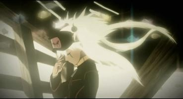

Disclaimer: This review covers the "Karas" six-part OVA, edited into a two-part film series in North America called "The Prophecy" and "The Revelation."I'm certain you probably haven't heard of the anime "Karas." If it weren't for an advertisement in a 2008 magazine I read at a time when I was just starting to appreciate anime, even I wouldn't have heard of it. When I eventually got around to searching for the Manga Entertainemnt DVD release for America, the films had already been long out of print. In pawn shops, it wasn't hard to find one of the movies, but difficult to find both. In 2019, I did come across the two films, "The Prophecy" and "The Revelation," used in a anime convention. Despite knowing the title, I knew almost nothing else about these movies. It was a blind buy, and I watched them, curious and not knowing what to expect.After the first few minutes, I said "Oh... OH.... this is good... this is very good..."After a few more minutes, I said "Oh... this is stupid... this is badass, but very stupid..."Edited into two films without a proper break point, I'm not surprised to hear that this was originally a six-part OVA. Meant to be an 40th anniversary project for Tatsunoko Productions, the original story is a complex mesh of dozens of popular anime from the early and mid-2000's. It's so convoluted that even now, minutes after watching them, I have trouble summarizing what the story is about. In modern Tokyo, demons secretly roam the streets, with some demonic forces planning to threaten the human race beyond minor scares. The only one to stop them is "Karas," a armor-clad katana-wielding human that made a pact to sell his soul in death, serving demons as a doctor by day, and hunting bad demons by night. As murders grow more mysterious, a duo of human detectives slowly grow closer to unraveling this secret world. And one army of demons is about to unleash their plan to erradicate the human race. Oh, and there's actually multiple Karas's. I think that sums it up. But I couldn't summarize what actually HAPPENS in the movies. Events seem random and without explanation. The first film, "The Prophecy," is the worst of the two. Even with some amibitious editing, the plot is non-existant. At least the fights are cool, and impressively, without much blood, gore, or sex, despite this being exactly the type of film to cater to such an audience.The second film (of which there is little actual indication that it is the second of the two), despite a bizarre "Starz Media" DVD release that fails to mention the 6.1 surround sound English track to match the first film (among other strange details), surprised me in a few ways. It's much bloodier, and at one point, strongly hints that the lead hero was gay when alive as a human. And while the story still doesn't make sense, it somehow manages to reach an exciting climax, and a reasonably satisfying conclusion. In fact, it's perfectly possible to watch "The Revelation" without watching the first film at all; you'll be just as confused either way.  Story and corny dialogue aside, "Karas" is really cool. It's gritty, flashy, all those things edgy anime in the mid-2000's was known for. It's like a bizarre mix of Batman, "Speed Racer," ".Hack/Sign," with a hint of "DragonBall Z" and the take-me-seriously storytelling of "Final Fantasy VII - Advent Children." I had a big smile on my face as I watched, like a kid who didn't fully understand what they were watching, but didn't care. The animation mixes 2D and 3D animation liberally, never attemptign to blend the two, allowing for some cool fight scenes and dynamic 3D camera pans. Not to mention the cool and diverse demon designs, ranging from robotic, cute, and vicious, mostly certainly recalling the period when violent OVA's were the norm in anime. The animation defintely looks like something from 2005, but arguably best in class for that period. The English voice acting was supposedly a big deal for Manga Entertainment: they got big name Hollywood voice actors for the lead roles. Actors like Jay Hernandez (Hostel) and Matthew Lillard (Scream). Yeah, I laughed at these random actors too, but apparently these actors were important enough to list on the front of the DVD box. For what it's worth, they (as well as the rest of the typical dub actors) do a good job selling the ridiculous plot. The musical score is the most surprising letdown, for not being nearly ambitious or grand enough to match what we see on screen."Karas" is like discovering a lost short film from "The Animatrix" that was expanded as a multi-film release. It's bizarre to me that it could have been so easily forgotten in anime history. Yes, the story is stupid. It would have been better served as a complete 12-episode series with room to explain things. But it's unusually ambitious, enough so to have merit. And it's plenty entertaining, perhaps moreso because of that horrible story. Gather your friends. Prepare some popcorn, chips and pretzels, nachos with extra cheese, a 2-litre Coke, and throw in a meat-lover's pizza too. These movies are a kickass time.
- "Ani" More reviews can be found at : https://2danicritic.github.io/ Previous review: review_Kanokon_-_The_Girl_Who_Cried_Fox Next review: review_Kase-san_and_Morning_Glories